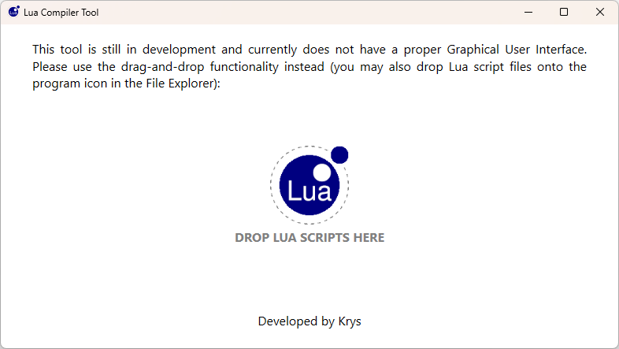

| <<< PREV |
If you reached this far in the builder’s tutorials (and assuming you did not just skip over the chapters), you’re well aware that Lua scripts are simple plain-text files, which means they can be opened and edited at any time. Even after you’ve finished working on your levels. Even after you have packaged those levels and uploaded them to a hosting site. Even when players are playing your released project… oh dear!
We weren’t born yesterday, were we? We know that for every hundred players that respect the level builder’s vision and play the game as intended, there will inevitably be a few that don’t care for the intended way of playing the game. This has always been the case and could never be entirely prevented. But it has become especially apparent and blatant in recent years, with some players outright removing certain plugin DLL’s from the game folder, because they did not like the changes that the plugin added (and not even considering the fact that they may potentially softlock or break the game by doing so). For this reason, the Plugin integrity check FLEP patch was created. It allows to specify plugins which, if they are missing, will make the game abort. The goal of such a solution is preventing the more defiant players from playing an altered version of the game, without all the plugins in place.
It’s not much of a stretch to expect such players to tamper with Lua script files too, knowing they’re plain text and can be opened and edited even in good ol’ Notepad. Or they may even delete such files, removing the effect from the game altogether. As was mentioned, the effects made possible by this plugin, are not always just for show. For example, a player may decide to open up a script responsible for a damaging projectile, change some numbers and make the projectile heal Lara, instead. Or perhaps another module bestows upon Lara a special magic power for combat, as an alternative to weapons, but the player makes the power insta-kill every single enemy, or give Lara infinite mana to spam the attack. Or a player may just disable a trap by removing the responsible module import in the level script. Plenty of opportunities for unruly players to cheat through your levels, or softlock themselves (and then have the audacity to put the blame on the builder, of all people, for this outcome)!
We would need a way to make this tampering process less straightforward, such that the Lua script files cannot be simply edited in Notepad (or some other text editor of choice), and ensuring that any missing script files prevent the game from being played. Lucky for you builders, there is a solution!
I have briefly signalled that there are actually two different file extensions that Lua script files can have. The first extension is the familiar .lua, the other is the more elusive .luac. You will not notice this second file extension in the dropdown menu of Notepad++ (if you’re using it). This is actually expected, due to how these two file formats differ.
While .lua files are the plain-text script files, editable in any text editor, .luac files are binary files. If you know a thing or two about computers, you know that binary files are not as easy to edit, at least not with a dedicated tool that can parse them. This would mean that converting the script files (both module and level scripts) to binary would make modifying them more of a challenge.
Module scripts as well as level scripts can have either of these two extensions. It is for this exact reason that the require() instruction expects a file name of the module without the extension, likewise the ExtraNG string for the level script. The plugin can read both and allows for either form to be present, in the respective folders!
However, it does prioritize one form over the other. If there are two modules with the same name, but one is in plain-text form with the .lua extension and the other is in binary form with the .luac one, the plugin will prioritize loading the plain-text file. This is particularly relevant in the off-chance that the actual code in both files happens to be different (e.g. the .luac is a more recent iteration than the .lua). A similar thing takes place with level scripts. When the level is loaded, the plugin prioritizes searching for the .lua level scripts first, then the .luac level scripts. There is no particular reason for this prioritizing, but in the edge case that both file types are present with an identical name, we (the plugin devs) simply had to let one take prevalence over the other, and we chose the plain-text file to come first.
Aside from the loading priority, the plugin does not see a difference between a .lua and a .luac file. The contents that is relevant to the plugin remains the same in either file. Due to how the standard Lua runtime is implemented, when it reads plain-text script files, it compiles them to the binary form during runtime regardless. If the file is already in binary form, though, it is removing one extra step that the Lua runtime does when parsing scripts. We say this binary script file is precompiled.
Precompiled scripts, as mentioned, are script files that are already in binary form. These binary files have the .luac extension (the ‘c’ at the end presumably stands for “compiled”). Aside from the loading priority described in the section above, the plugin does not prefer text files over binary files. If anything, the precompiled file is faster to load, as the Lua runtime does not have to compile it first. However, this speed boost due to precompilation is truly negligible and not the main reason to precompile your script files.
The main reason has already been stated – binary files are a lot harder to edit than text files. If you open a .lua in any text editor, you get to see the entire code in text form and make any desired changes to it. If you try to forcibly read a binary file through Notepad++, what you get is a bunch of random, indecipherable characters. This is because the binary file no longer consists of ASCII or Unicode text characters, but of a binary byte sequence. Notably, one cannot prevent still making edits to a file in this form, but it certainly takes more effort and skill not to break anything and corrupt the file in the process. Hopefully, this will discourage all but the most determined players from tampering with script files in a custom level set.
I have to give a very explicit disclaimer here, which is to clarify that precompilation does nothing to obfuscate the contents of the script file, aside from taking the code from human-readable form (text) to machine-readable form (bytes). It doesn’t perform any sort of encryption algorithm on the script files. This means that you can still take a .luac binary file and go to a website hosting a Lua decompiler, like https://luadec.metaworm.site/. The binary script will be converted back to its text form, missing only some originally used identifiers and comments. A determined player may still use such websites to understand or even “reverse-engineer” the binary file back to a text file, for easy editing.
So why don’t we just implement encryption? Because we, the developers of this plugin, are not in favor of such solutions. As much as we understand the argument for not allowing players to cheat or alter the game in unintended ways, we also do not support entirely forbidding access to information. If someone is willing to put in the effort, they can also cheat by altering the savegame memory or hex-editing the game executable, which is just a step or two further of reversing a Lua file. You can never prevent this completely, and if the players end up ruining their gaming experience in the process, we simply say – it’s their choice.
If you still want encryption, the source of this plugin is available on GitHub, so you may implement any kind of encryption you want, at your own discretion. However, it will not come from us.
If you snooped around the contents of the Plugin_ParticleSystem.zip archive, you may have noticed a folder in there, LuaCompiler.
This folder contains a simple, rudimentary tool, LuaCompiler.exe, for generating a precompiled binary (.luac) out of a plain-text Lua file (.lua).

It has a simple drag-and-drop interface (either after launching the program and dropping the .lua files on the window, or directly onto the program EXE in File Explorer). The tool generates corresponding binary files out of the given Lua text files, in the same directory as the input files.
Of course, the end goal is for the binary files to take place of the text files. This way, when the level becomes available to the public, the contents of the modules and level scripts is less likely to be altered. Minding the fact that the plugin prioritizes loading the text files first, one should remove the text versions (.lua) from the levelscripts and modulescripts folders, leaving just the binaries (.luac) behind.
A very important thing to note is that the tool can only do a one-way conversion from text to binary! It cannot convert back from binary to a text file. For this reason, you should make sure that you generate the precompiled scripts at the last stages of preparing your custom level package (right before sending it to a level hosting site or elsewhere), as well as keeping the original text-form script files (modules and level scripts) in a safe place, just in case. Even though in a pinch, it would be possible to partially recover the contents of a script from a binary (for example with the online decompiling tool linked above), the original identifiers as well as any comments may be lost in the process. Perhaps, this has far bigger consequences for module coders (who may lose their entire work) than builders, but still, it’s advisable to play it safe and back everything up just before the final conversion to binary files. The tool does not delete the .lua files by itself, in order to make this process extra safe.
Precompiling your script files should protect the contents of Lua scripts from being tampered with (well, as much as it’s possible without resorting to full encryption). Unfortunately, precomilation is of no help when players can just go and delete the script files, even in the binary .luac format! The good news is this also has been considered and the plugin provides a solution for it as well.
The plugin has another CUST_ constant included in it. This second constant is CUST_SCRIPT_INTEGRITY, with two possible options: ENABLED or DISABLED.
| <<< PREV |